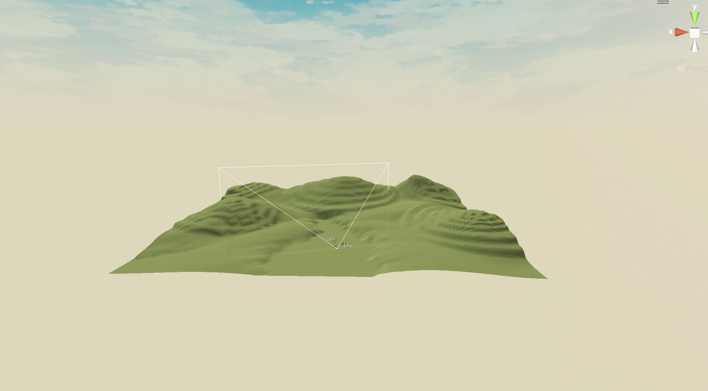
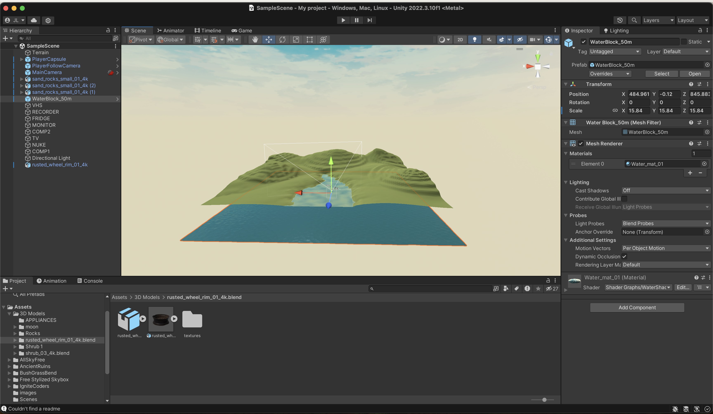
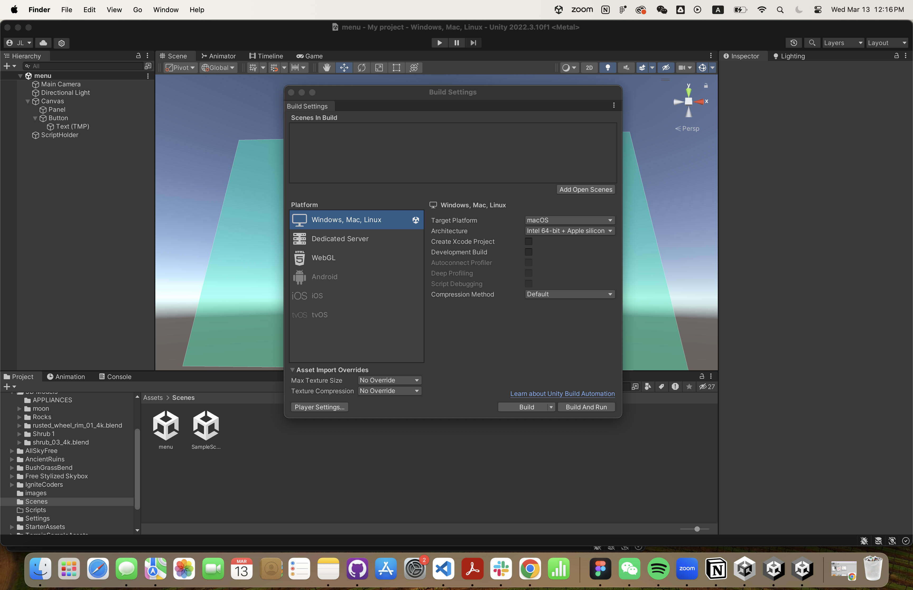

My idea for ideal dream place exists somehwere mountains and water meet, there's plenty of green. Yet it's not a strict nature only environment. It stores all your memory and lost objects from the past. Here, the physics and gravity work different than it is on the place. Everything you missed and lost will be forever stored here, and nothing will be lost or damaged again. First, we build the terrain, and changed the skybox:
Then to add water, i realized I have to switch my file from Core to URP. Thus I redid that and added water. Along with other 3D objects, the space is pretty much done.


I then go on to design the entry page, however, it won't lead me to my scene. I eventually ended up debugging with Chat GPT and found out for some reason, I didn't have an Event System. Nor did I build my scenes.
After fixing that, once we're in, we now need to make the 3D models interactive, by making them into prefabs, and add rigidbody and capsule collider. Once all thaT is done, I added the ray casting script to my main camera.